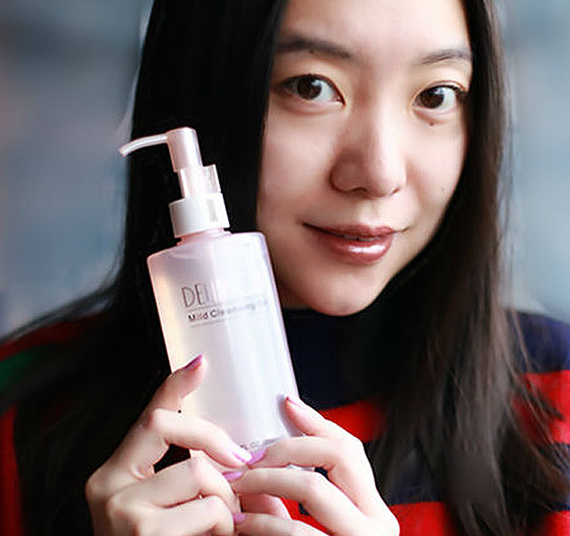
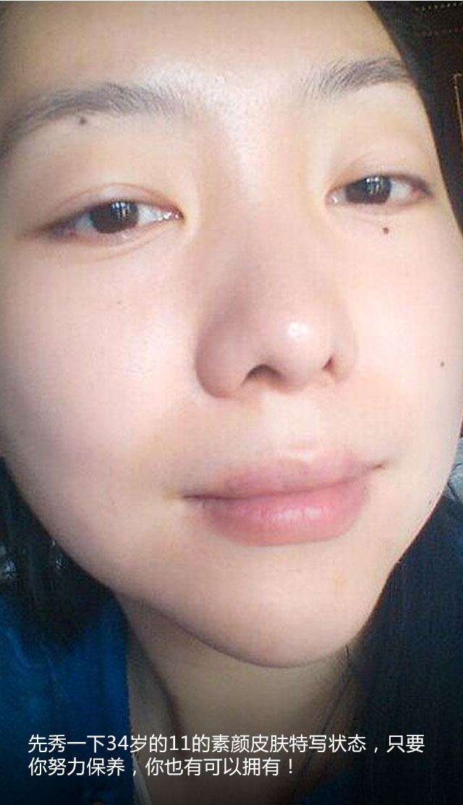
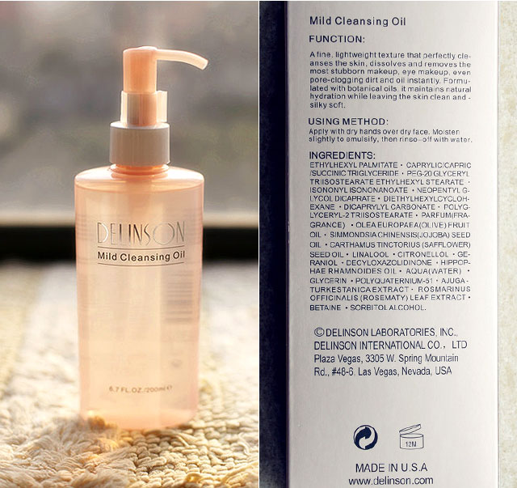
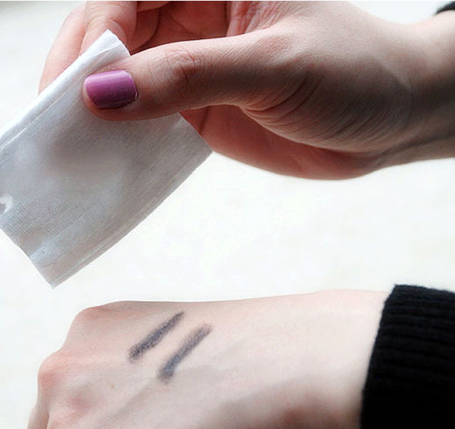
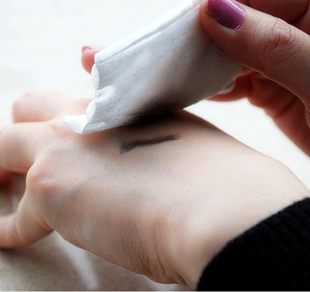
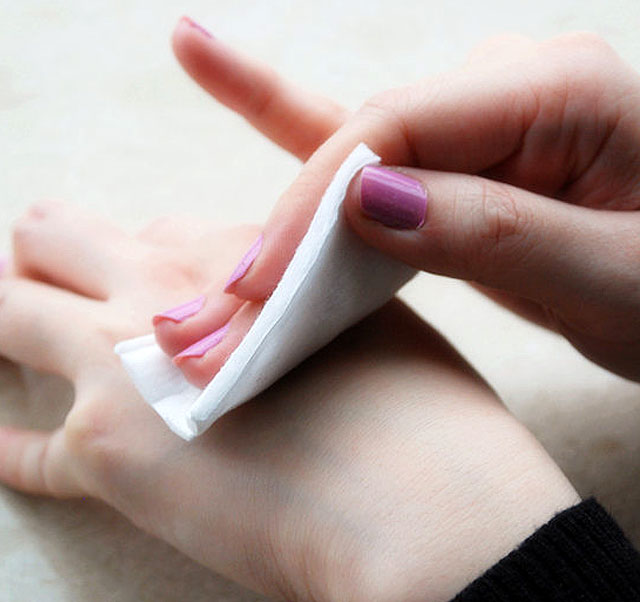
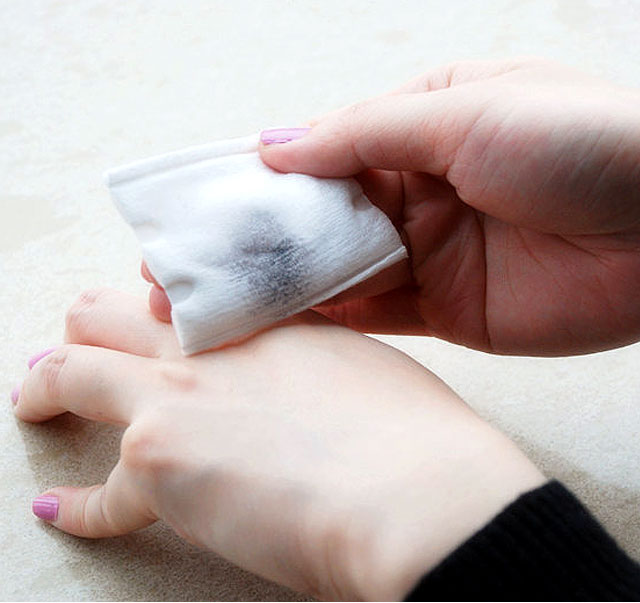
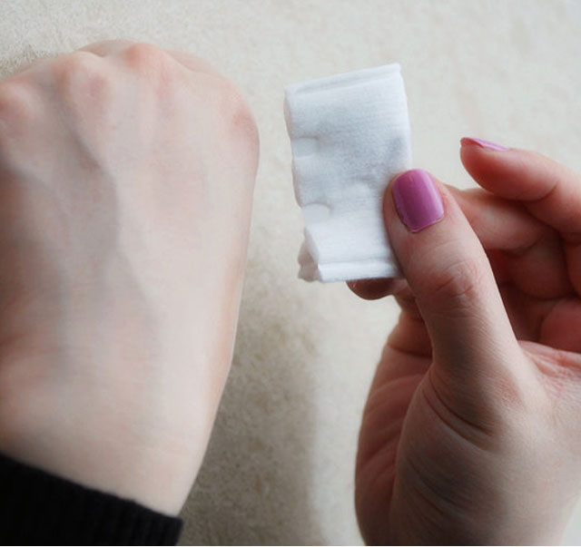

桃之11的自用小屋
您的浏览器不支持canvas
CoCo主播 心语
Delinson椰子卸妆油
暂停

11用过的最好的卸妆油，去黑头神器
￥
160.00
带我回家
￥
160.00
带我回家
品牌名称：
黛兰丝汀（Delinson）
产品功效：
去黑头 深层清洁 卸妆 舒缓肌肤
适用人群：
任何肤质
产品容量：
200g/ml
生产地区：
美国
保质期限：
3年(具体日期以收到产品为准)
特别说明：
美国原装进口，绝对正品，价格也非常白菜
      
用法：
如果白天有涂隔离防晒，那回家先卸妆，然后清水洗掉，晚上洗澡的时候，可以再用一次洁面。如果作为每周定期的深层清洁毛孔用，那就是晚上洁面之后，使用椰子油，打圈按摩，然后清水洗掉即可，不必再用洁面，不要过度清洁皮肤，让皮肤变薄。我个人喜欢卸妆用化妆棉配合，去黑头清洁毛孔直接用手按摩。另外，不要依赖去角质产品，会让皮肤变薄，建议用椰子油替代去角质，专利椰子油可以保护皮肤角质层，所以也不必洗到非常彻底。
买家评价
Customer Reviews
不***昕
用了两天才来评价，按11说的每天晚上洗完脸再用这个卸妆油按摩鼻头，我按摩的时间比较长，真的有一小粒一小粒的脏东西被揉出来，但是数量不多，第二天照镜子鼻头明显比前晚要干净，我会一直坚持用的，非常感谢11，东西很好。
r***9
真的会搓出脏东西诶，比贝德玛好用，又不刺激，味道也好问，用33的话说，11确实是神物发现者。
m***9
非常温和，本人不化妆，用来做深层清洁的，用了一次感觉不错，具体效果长期使用后再追评
j***5
叶子味真的很好闻，洁面后特别的清爽，温和还不刺激。大爱
cuizh...
像所有评论中体验的一样，味道很好闻，不太油，按摩很舒服，我严重的黑鼻头没有浮现出颗粒，但是肌肤提亮了，我要继续坚持用，希望我鼻子周围的毛孔变小
×